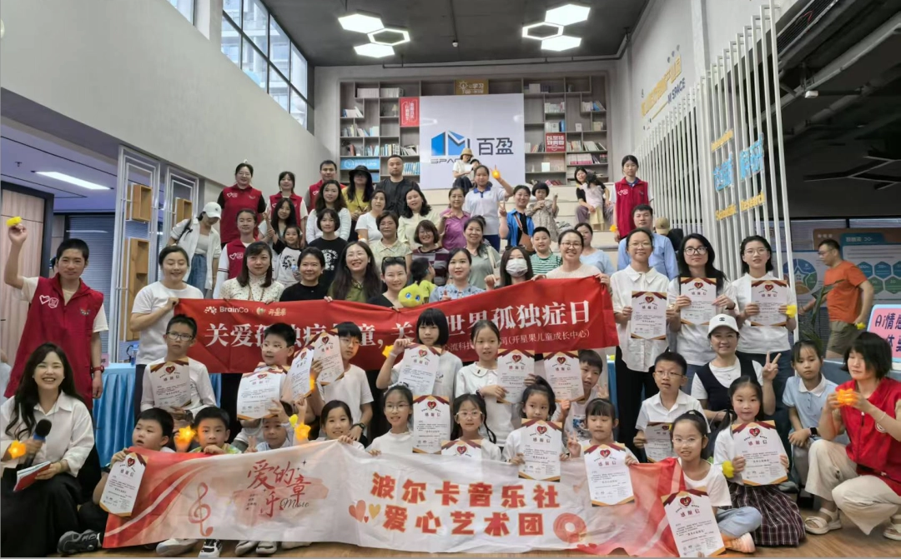
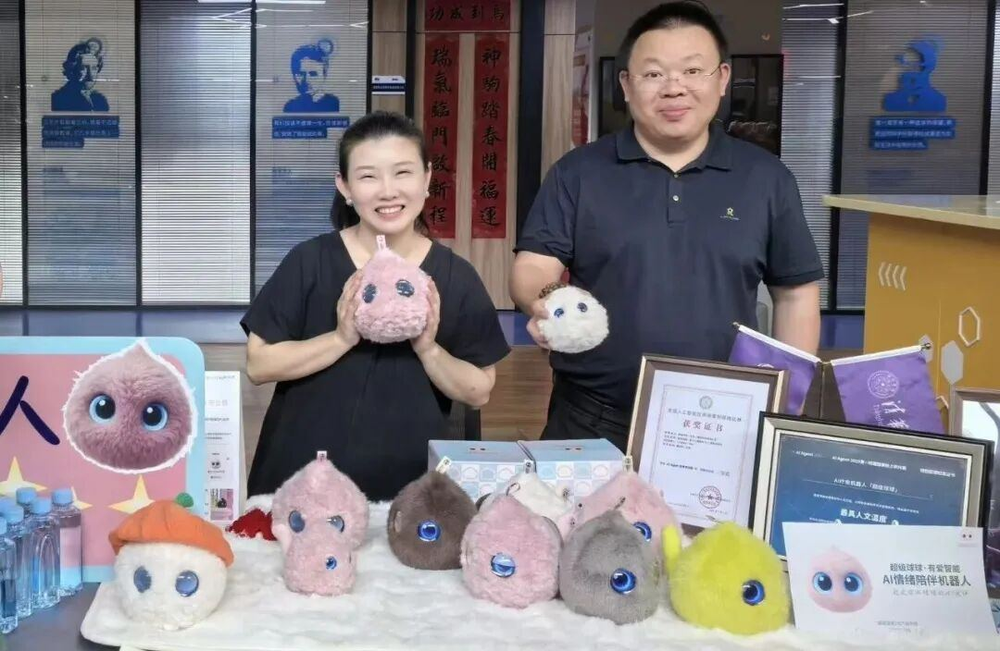
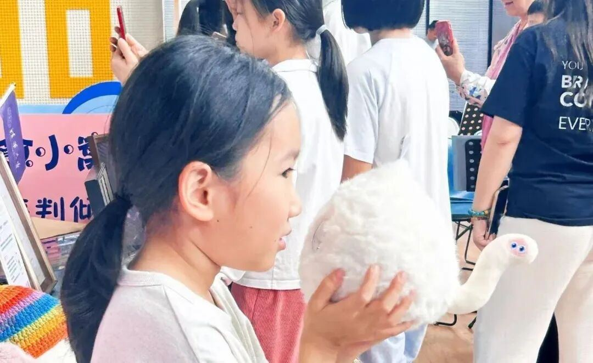
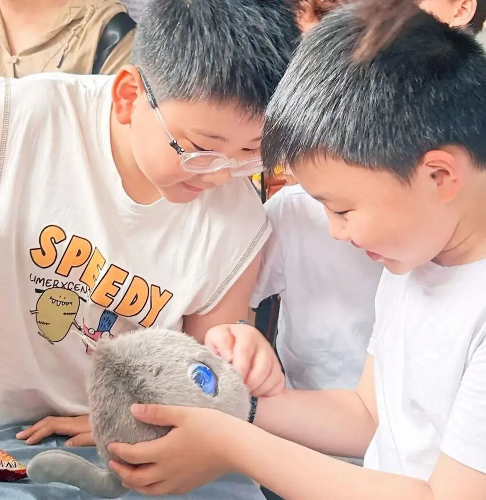
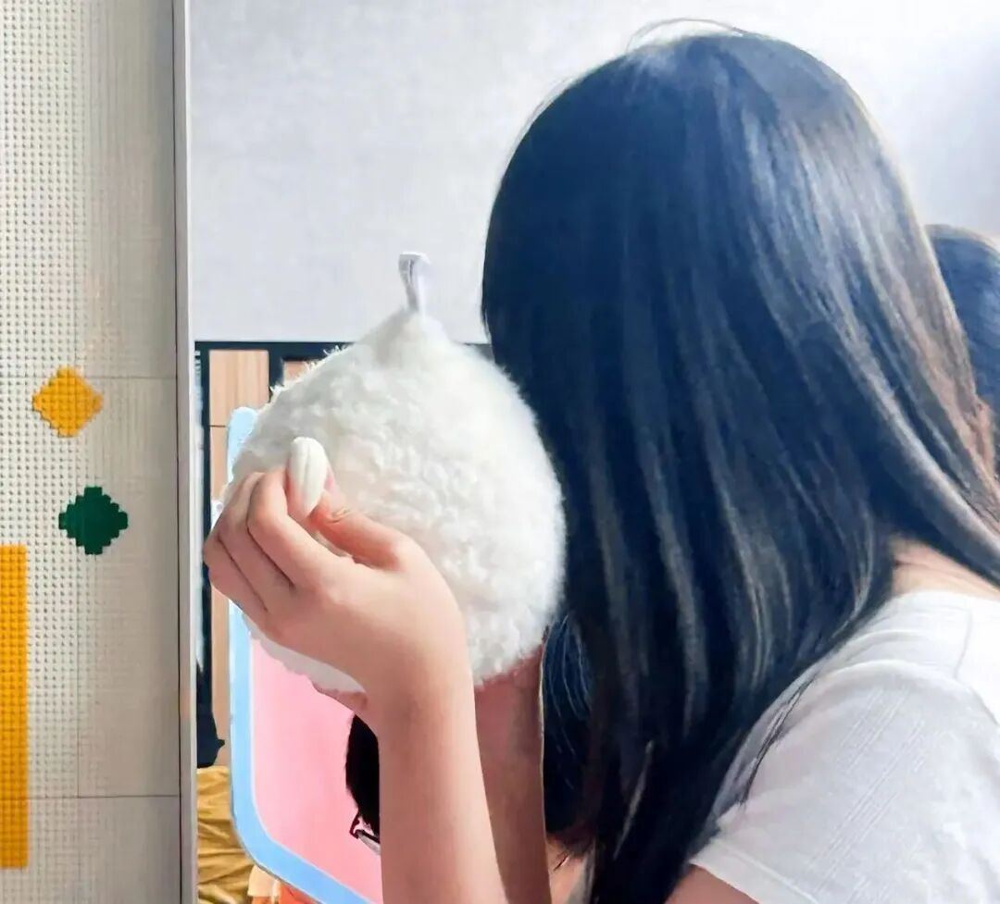
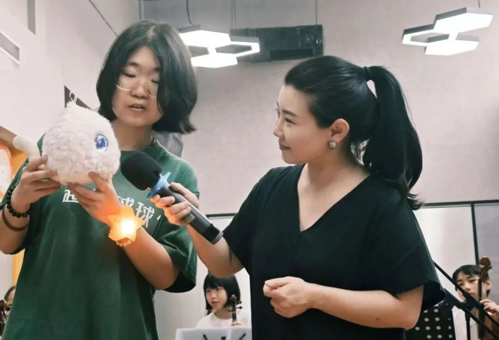

本次活动为孩⼦们精⼼打造了“星海同频，童声和鸣”主舞台、AI互动与⽀持等核⼼区域，各区域同步开放、温情联动，将科普、汇演、科技体验与公益互动深度融合，为孩⼦们营造了⼀个安全、包容、充满温度和回应的多元融合空间，孩⼦们在这⾥可以按照⾃⼰的节奏去感受世在AI互动与⽀持区域，超级球球把关⼼与爱带到了孩⼦们⾝边。当软萌可爱的它被轻轻递到孩⼦⼿中时，没有犹豫他们紧紧抱住、轻轻捧在掌⼼，慢慢地，孩⼦们开始对球球敞开⼼


扉，讲述⾃⼰的情绪和⼩世界，那些平时难以表达的话，也⼀点点被说出来。⽽球球始终耐⼼地倾听、回应、共情，让这些“来⾃星星的孩⼦”，不再孤单，也不再沉默。
很多⼈会问，AI究竟能做什么？或许答案不只是“更⾼效”“更智能”。AI，也可以是温柔的，是有温度的。超级球球也许很⼩，但它正在尝试做⼀件很⼤的事：让那些难以被理解的情绪，被看⻅、被回应、被真正陪伴。

这个世界上，每⼀个孩⼦，都值得被认真倾听，被温柔对待。如果有这样⼀个存在能耐⼼倾听、认真回应、始终陪伴、不曾离开，那他们眼中的世界，会不会变得不⼀样？

超级球球，正在努⼒成为这样的存在。陪伴，从来不只是功能，⽽是⼀种被认真对待的温柔。
